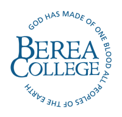
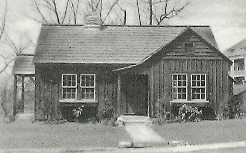
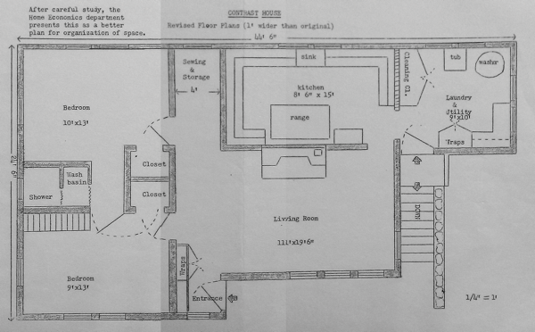
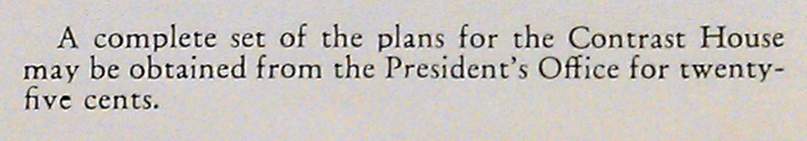

Twitter: @craftoe
Email:
A Model House
Berea College, in conjunction with MakeCNC, is happy to present a model of the Berea Contrast House that you can cut and build yourself. The plans for this house are free and open, and were originally developed to be a fundamental part of Craft of Electronics, a first course in electricity and electronics at Berea College.
Berea College
Berea College (www, wiki) is a liberal arts college, founded in 1855 in Berea, Kentucky. Since its founding by abolitionist John Fee, Berea has admitted all people, and today provides tuition-free education for over 1,500 students.
The Contrast House
The Berea Contrast House has a rich and complex history in the Appalachian region. The Contrast House was a product of Berea College, likely suggested by Miss Mary Beatty Brady of the Harmon Foundation in the early 1930’s. 1 In his 1936 annual report, President William J. Hutchins wrote that “One of the supreme contributions of Berea College to the mountains must be the improvement of the home,” and although costs overran (due to labor, etc.), the materials cost of the original Contrast House was just $650. It is interesting to note that, at the same time, architect Frank Lloyd Wright was completing a private home in Madison, Wisconsin that was to cost under $5,000… nearly ten times the cost of a Contrast House.

The Contrast House from the front.
In the booklet “Glimpses of Berea College,” we can see photographs of the completed Contrast House. It was a simple structure, approximately 20 feet by 44 feet, with two bedrooms, a living room, kitchen, and laundry. At $650 in materials, the Berea Contrast House cost approximately $0.74 per square foot.

Although it is difficult to imagine a Contrast House being built in the middle of Manhattan island in New York City, we can compare the Contrast House to an apartment in the 300-block of Central Park West. It is not uncommon for apartments to cost hundreds of thousands of dollars; for example, an 849 sq. ft. apartment would, in 2012, set you back $835,000, costing approximately $983.51 per square foot.
Despite the fact that half a century has passed, the plans developed by MakeCNC cost less today than the original plans for the Contrast House. We are making plans that you can cut out by hand (or, ideally, with a CNC laser or router) available for download for free.
Build Your Own
Through the generosity of Paul and Julie Campbell at MakeCNC and his collaborators …, …, and Berea College, we are proud to bring you a model of the Berea Contrast House that you can build yourself. This model is designed to be cut from a variety of materials (wood, acrylic, and eco-friendly cardboard).
References
- The Contrast House at the Bereapedia.
- History and Mission of Berea College.
- The Contrast House in the Berea College Archives.